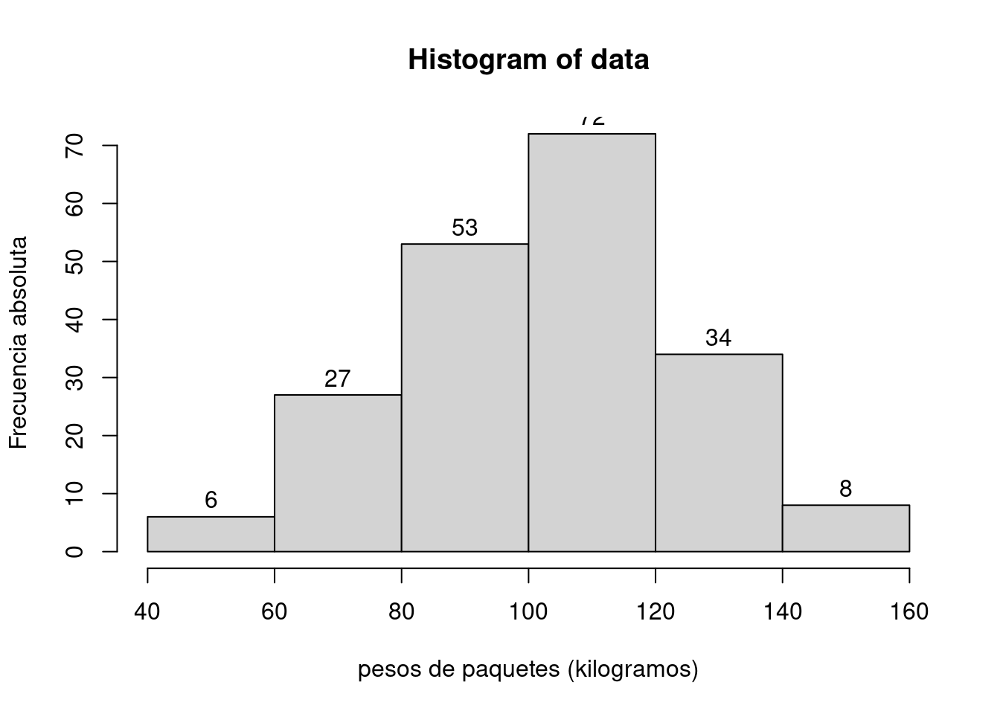
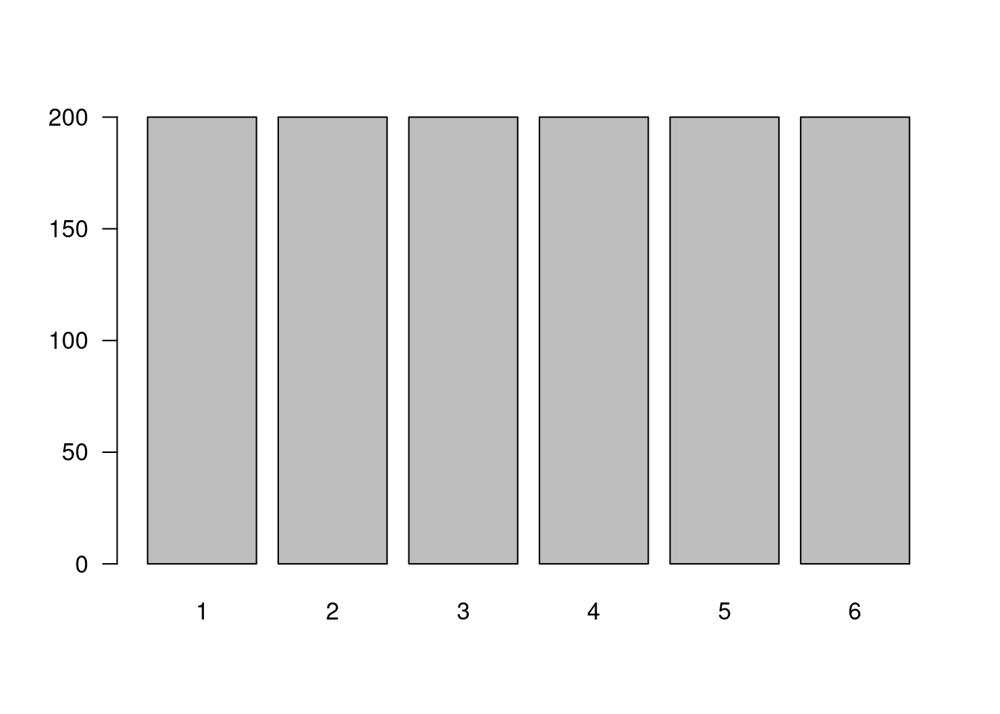
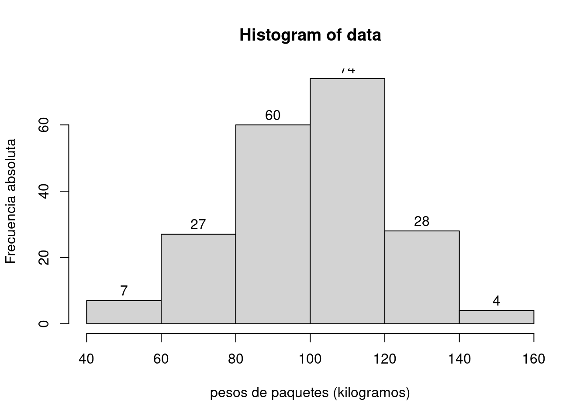
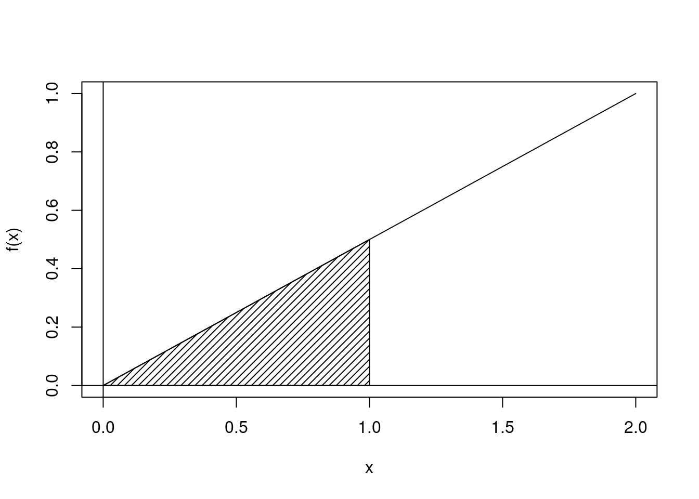

Recursos
Módulo 3- Unidad 3.1
dgonzalez
2. Recursos
Variables aleatorias

2.1 Introducción
El concepto de variable aleatoria constituye uno de los conceptos principales de la probabilidad y estadística. A este concepto se pueden asociar dos paradigmas de evolución histórica segun J.A. Alberth & B. Ruiz (2013) , El primero basada en el resultado de fenómenos aleatorios y por otro lado el proceso que relaciona los conjuntos de espacio muestral y sus respectivas probabilidades, para definir el concepto de variable aleatória como función de números reales y el espacio para el sustento matemático.
Ahora, se puede relacionar el concepto de variable aleatoria a diferentes contextos donde se requiere dar respuesta a preguntas relacionadas con la ocurrencia o no de fenómenos aleatorios que eventualmente se presentarán en el futuro, como por ejemplo:
¿Cuánto tiempo se tarda un estudiante en ir a la universidad?
¿Cuál será el resultado en mi próximo examen de estadística?
El dueño de la cafetería se puede preguntar ¿Cúantas botellas de agua se venderán esta semana?
¿Cuánto tiempo tardaría la entrega de un paquete una empresa de mensajería?
¿Cuánto tiempo dura la bombilla de un vehículo?
¿Qué diámetro tendrá la perforación de una máquina en una lámina de acero que hace parte de una puerta de un vehículo?
¿ cuanto tiempo tardara la creación de la vacuna para el Covid-19?
En todos los casos se trata de preguntas que tienen diferentes respuestas, o que no tienen un único valor como respuesta. En este documento se estudiará el concepto de variable aleatoria y mediante la definición de una función matemática que nos permita caracterizar su comportamiento, realizaremos diferentes cálculos de probabilidades de interés. Para ello será necesario retomar conocimientos de cálculo integral que serán expuestos en su momento mediante funciones de fácil manejo.
En esta unidad se tratará el caso univariado discreto, luego el caso continuo,con sus principales características, conceptos relacionados con los vistos en el modulo anterior.
Definición: Variable aleatoria
Una variable aleatoria \(X\) es una función que asigna a cada valor de un espacio muestral \(S\) un numero . El conjunto formado por estos números conforman un subconjunto de los reales llamado rango de la variable X, (\(R_{_{X}}\))
Las variables aleatorias se clasifican teniendo en cuenta las características de su rango en discretas, continuas. La distribución de una variable aleatoria será univariada si se estudia el comportamiento de una sola variable y serán multivariadas si se considera el comportamiento conjunto de varias variables definidas sobre el mismo espacio muestral.Este ultimo caso sera tratado en la unidad 3.2
Tipos de variables
- Una variable \(X\) se considera discreta si su rango \(R_{_{X}}\) es un conjunto finito o infinito numerable de valores.
- Se considera continua si su rango \(R_{_{X}}\) es un conjunto de valores infinito no numerable y generalmente corresponde a unión de intervalos.
El siguiente ejemplo ilustra el concepto de variable discreta:
Ejemplo 1 : Un experimento aleatorio \(E\), consiste en lanzar una moneda balanceada al aire tres veces y observar el orden de caras (\(c\)) y sellos (\(s\)) que se obtienen en los tres lanzamientos. El espacio muestral \(S\) de \(E\), estará dado por:
\[S =\{(s,s,s),(s,s,c),(s,c,s),(s,c,c),(c,s,s),(c,s,c),(c,c,s),(c,c,c)\} \]

Sea \(X\) la variable que asigna a cada resultado el número de caras en los tres lanzamientos de la moneda. En este caso el rango asociado a la variable será \(R_{_{X}}=\{0,1,2,3\}\) determinado por la regla de asignación: número de caras en los tres lanzamientos de la moneda. A cada valor \(X\) en \(R_{_{X}}\) le corresponde un valor de probabilidad \(f_{_{X}}(x)=P(X=x)\) conformando de esta manera una función. La expresión \((X=x)\) hace referencia al evento que contiene todos los resultados en \(S\) y que tiene como imagen el número real \(x\). En este ejemplo \((X=0)=\{(s,s,s)\}\) ; \((X=1)=\{(s,s,c),(s,c,s),(c,s,s)\}\) ; $(X=2)={(s,c,c),(c,s,c),(c,c,s) } $ y \((X=3) =\{(c,c,c) \}\). Bajo el supuesto que la moneda es balanceada, se cumple que los resultados en \(S\) son igualmente posibles y por lo tanto:
\[f_{_{X}}(0) =P(X=0)= \frac{1}{8} \hspace{.2cm} ,\hspace{.5cm} f_{_{X}}(1) = P(X=1)=\frac{3}{8},\] \[f_{_{X}}(2) = P(X=2)=\frac{3}{8}\hspace{.2cm} ,\hspace{.5cm} f_{_{X}}(3) =P(X=3)= \frac{1}{8}\]
En la figura 1 se aprecia la relación entre el dominio, el rango y la regla de asignación antes mencionados.
2.2 Variables aleatorias discretas
2.2.1 Función de distribución de probabilidad
Definición: Función de distribución de probabilidad
Para \(X\) un variable aleatoria discreta, su función de distribución de probabilidad estará dada por \(f(x)\), la cual proporciona las probabilidades asociadas a todos los valores de su rango \(R_{X}\) . Esta función debe cumplir las siguientes propiedades:\
\(f(x) = P(X=x) > 0\)
\(\sum_{R_X} f(x) =1\)
En el Ejemplo 1 se puede resumir de la figura 1 de la siguiente manera:
| \(x_i\) | \(n_i\) | \(f(x_i)\) | \(F(x_i)\) |
|---|---|---|---|
| 1 | 203 | 0.1691667 | 0.1691667 |
| 2 | 189 | 0.1575000 | 0.3266667 |
| 3 | 208 | 0.1733333 | 0.5000000 |
| 4 | 232 | 0.1933333 | 0.6933333 |
| 5 | 200 | 0.1666667 | 0.8600000 |
| 6 | 168 | 0.1400000 | 1.0000000 |
| Total | 1200 | 1.0000000 | 1.0000000 |
La función \(f_{_{X}}\) definida se denomina función de distribución de probabilidad de la variable \(X\) y como se mencionó en dicho ejemplo establece la probabilidad de que la variable tome el valor respectivo, es decir \(f_{_{X}}(x)=P(X=x)\). El siguiente ejemplo ilustra con mayor detalle la forma de encontrar funciones de probabilidad.
Ejemplo 2 : Suponga que se lanza mil doscientas veces un dado legal \((m=1200)\) y se obtienen los resultados consignados en la Tabla 1
x=sample(1:6,1200, rep=TRUE)
# Tabla 1 Resultados en experimento de simulación del lanzamiento de un dado $1200$ veces y frecuencias esperadas
t=summarytools::freq(x)
t=as.table(t)
t[,2:5]=t[,2:5]/100
t=t[,c(1,2,3)]
t## Freq % Valid % Valid Cum.
## 1 204.0000000 0.1700000 0.1700000
## 2 218.0000000 0.1816667 0.3516667
## 3 188.0000000 0.1566667 0.5083333
## 4 200.0000000 0.1666667 0.6750000
## 5 183.0000000 0.1525000 0.8275000
## 6 207.0000000 0.1725000 1.0000000
## <NA> 0.0000000
## Total 1200.0000000 1.0000000 1.0000000La segunda columna de la tabla 1 recoge el número de ocurrencias de cada resultado del experimento planteado (\(n_i\)), lo cual indica el número de lanzamientos de los 1200 (\(N\)) en que salieron el 1,2,3,4,5 y 6.
Para calcular la distribución de frecuencias relativas (tercera columna) se divide cada frecuencia absoluta por el total de lanzamientos realizados en el experimento \(f_{n}(x)=n/N\) .
La probabilidad teórica de que la variable \(X\) tome cada uno de los valores \(x\) es la misma e igual a \(1/6\), bajo el supuesto de que el dado está balanceado, esto es: $f_{{X}}(1) = f{{X}}(2) = f{{X}}(3) = f{{X}}(4) = f{{X}}(5) = f{_{X}}(6) = 1/6 $ es por esto que se afirma que los eventos simples son igualmente probables o posibles (equiprobables).
De acuerdo con lo anterior la frecuencia absoluta esperada para cada resultado es igual a \(1/6 \times 1200 = 200\). Estos valores se representan en la última columna de la Tabla 3.1
labsx=1:6
t=table(x)
barplot(t, names.arg=labsx, las=1)
Figura 2 Frecuencias empíricas para cada resultado posible al lanzar 1200 veces un dado legal. Ejemplo 2
x=c(200,200,200,200,200,200)
labsx=1:6
barplot(x, names.arg=labsx, las=1)
Figura 3 Frecuencia esperada para los posibles resultados al lanzar un dado legal 1200 veces.
La relación entre \(X(S)\) y \(f(x)\) se conoce como función de probabilidad \(f_{_{X}}(x)\) la cual puede ser representada de la siguiente forma:
\[f_{_X}(x)= \begin{cases} \dfrac{1}{6} \hspace{1cm} \text{ si } x \in \lbrace1,2,3,4,5,6\rbrace\\ \\ 0 \hspace{1cm}\text{ en cualquier otro caso } \end{cases} \]
Las representaciones gráficas de las frecuencias absolutas observadas y los valores esperados para cada resultado obtenido de manera empírica se presentan en la figura 3.2 y para el resultado teórico en la figura 3.3 . Se puede observar que a cada valor de la variable aleatoria \(X\) le corresponde un valor de probabilidad de ocurrencia \(f_{_{X}}(x) =P(X=x)\). Como se dijo en el párrafo anterior esta relación entre \(X\) y \(P(X=x)\) se conoce como {} de la variable aleatoria \(X\) y se denota por \(f_{_{X}}(x)\).
Es de observar que para \(m=1200\) veces que se repitió el experimento aleatorio, la distribución de frecuencias absolutas observadas ofrece valores aproximados a los cálculos teóricos de las probabilidades, puesto que el experimento se repite un número grande de veces (1200).
La representación gráfica más habitual de la función de probabilidad es un diagrama de barras no acumulativo aunque no del todo correcto, pues se trata de una representación discreta, como el presentado la figura 3.3
Por otro lado, si se comparan las alturas de las barras de las figuras 2 y 3 , los valores son muy similares.
La figura 2 corresponde a la aproximación a la frecuencia absoluta de cada valor posible de \(X\) a partir de la frecuencia relativa cuando el experimento se repite \(1200\) veces. Es así como la distribución de frecuencias relativas para diferentes valores de \(X\) cuando \(m\) es grande, permite aproximar la distribución de probabilidad de \(X\).
En resumen la función de distribución de probabilidad para la variable aleatoria \(X\) número de puntos obtenidos al lanzar un dado es:\
\[f(x) = \left \{ \begin{matrix} \dfrac{1}{6} & \mbox{ , } x=\{1,2,3,4,5,6\} \\ 0 & \mbox{ , } \mbox{ en cualquier otro caso } \end{matrix}\right. \]
la cual cumple las condiciones para ser una función de distribución de probabilidad \(f(x)\)
{figura304a} {g304} Figura 3.4 Simulación del valor de probabilidad de ocurrencia de 1 en un dado legal del Ejemplo 3.2
La figura 3.4 representa los valores de \(P(X=1)\) simulados para diferentes tamaños de replicas. En ella se observa la tendencia a un valor estable en la probabilidad (\(1/6\)).\
3.2.2. Función de distribución acumulada
El concepto de función de distribución acumulada se introduce mediante la continuación del ejemplo 3.1
Se construye ahora la Tabla 3.2, a partir de la Tabla 3.1 . En la nueva tabla se suman las frecuencias relativas \(f_n(x)\) de manera consecutivas para obtener las frecuencias relativas acumuladas \(F_n(x)\). También se calculan las sumas de las probabilidades consecutivas de \(f_{_X}(x)\), para de esta forma determinar \(F_{_{X}}(x)=P(X\leq x)\), para cada valor de \(R_{_{X}}\).\
Los resultados de las Tabla 3.2 se ilustran en las figuras 3.5 y 3.6 . En el eje \(x\), se ubican los valores posibles de la variable aleatoria \(X\) y en el eje \(y\) los valores de \(F_{n}(x)\) y \(F_{_X}(x)\) respectivamente.
Tabla 3.2 Resultados de la simulación y teóricos obtenidos al lanzar un dado balanceado 1200 veces \
{figura305.pdf} {g305} Figura 3.5 Probabilidades para cada valor de \(X\) posible en el experimento ejemplo 3.2
{figura306.pdf} {g306} Figura 3.6 Función de distribución acumulada de X en el ejemplo 3.2
En la Figura 3.5 se aprecia que en el \(17.3\%\) de los lanzamientos se obtuvo un \(1\), en el \(34.4\%\) de los lanzamientos se obtuvo el \(1\) o el \(2\), en el \(50.7\%\) de los casos se obtuvo 1 o 2 o 3, y en el \(100\%\) de los casos se obtuvo máximo \(6\) en la cara superior del dado.
De la Figura 3.6 se puede concluir, por ejemplo, que la probabilidad que al lanzar un dado se obtenga un puntaje inferior a \(3\) es \(0.3333\), la probabilidad que se obtenga un puntaje igual o inferior a \(4\) es de \(0.6667\).
La función de probabilidad acumulada para \(X\) puede representarse mediante la siguiente función definida a trozos:
\[F_{_X}(x)= \begin{cases} 0 \textnormal{ si } x<1 \\ 1/6 \textnormal{ si } 1\leq x<2 \\ 2/6 \textnormal{ si } 2\leq x<3 \\ 3/6\textnormal{ si } 3\leq x<4 \\ 4/6\textnormal{ si } 4\leq x<5 \\ 5/6\textnormal{ si } 5\leq x<6 \\ 1\textnormal{ si } x\geq6 \\ \end{cases}\]
De manera general:
Definición: Función de probabilidad acumulada variable aleatoria discreta
Sea $X$ una variable aleatoria discreta función de distribución de probabilidad $f(x)$, La función de probabilidad acumulada $F(x)$, esta dada por:
$$F(x) = P(X \leq x) = \sum_{t\leq x} f(t) $$Propiedades de la función de distribución acumulada
- $0F_{X}(x) $.
- \(F_{_{X}}(x) = 0\) para todo valor \(x\) anterior al menor valor de \(R_{_{X}}\).
- \(F_{_{X}}(x)=1\) para todo valor \(x\) igual o posterior al mayor valor de \(R_{_{X}}\).
- \(F_{_{X}}(x)\) es no decreciente.
La representación gráfica de \(F(x)\) tiene forma escalonada (figura 3.6), siendo los saltos coincidentes con las probabilidades \(f_{_{X}}(x)\) correspondientes a cada valor \(x\) .
Por definición \(F_{_{X}}(x)=P(X \leq x)\) , entonces, para el ejemplo 3.2
% \(F_{_{X}}(1) = P(X \leq 1) = P(X=1)=1/6\) \(F_{_{X}}(2) = P( X\leq 2) = P(X=1)+P(X=2)=2/6\) \(F_{_{X}}(3) = P( X\leq 3) = P(X=1)+P(X=2)+ P(X=3)=3/6\) \(F_{_{X}}(4) = P( X\leq 4) = P(X=1)+P(X=2)+P(X=3)+P(X=4)=4/6\) \(F_{_{X}}(5)=5/6\) \(F_{_{X}}(6)=1\) %
Ejemplo 3.3: Suponga que la probabilidad de que una máquina importada llegue en buenas condiciones y funcione adecuadamente sin que se realicen ajustes es de \(0.70\). En un envio de 5 de estas máquinas se define la variable \(X\) como el número de máquinas que funcionan adecuadamente al llegar a su destino. Hallar:
- Función de distribución de probabilidad de \(X\)
- Función de distribución acumulada de \(X\)
- Gráficas de la función de distribución de probabilidad y la distribución acumulada de \(X\)
- Probabilidad de que funcione adecuadamente entre dos y cuatro máquinas inclusivas
- Probabilidad de que funcione adecuadamente menos de cinco máquinas
- Probabilidad de que funcione adecuadamente más de una máquina . Probabilidad de que funcionen adecuadamente al menos tres máquinas
Solución:
Note que al revisar las máquinas podría encontrarse que todas funcionen correctamente o solo una funcione o en el peor de los casos ninguna funcione adecuadamente.
- Inicialmente se determina la función de probabilidad de \(X\). En adelante se hará referencia a las máquinas como: \(m1\), \(m2\), \(m3\), \(m4\), \(m5\). Se definen los eventos: \(A_{i}\): la máquina \(m_{i}\) funciona y \(N_{i}\) la máquina \(m_{i}\), no funciona.
Para resolver el problema se debe calcular las probabilidades de que cierto número de máquinas funcione y por tanto se debe calcular la probabilidad asociada a los valores de \(X\), definida como el número de máquinas que funcionan en el lote de \(5\) unidades. El dominio de valores posibles que toma la variable es \(R_{_{X}}=\{0,1,2,3,4,5\}\). Por último se procederá a determinar la función de probabilidad calculando los valores : \(f_{_{X}}(0)\), \(f_{_{X}}(1)\), \(f_{_{X}}(2)\), \(f_{_{X}}(3)\), \(f_{_{X}}(4)\), \(f_{_{X}}(5)\),
Para determinar \(f_{_{X}}(0)=P(X=0)\) se debe calcular la probabilidad de que la variable \(X\) tome el valor de cero que ocurre cuando ninguna de las máquinas funciona. \(X=0)\) ó \(\{ N_{1} \cap N_{2} \cap N_{3} \cap N_{4} \cap N_{5} \}\). Si se tiene en cuenta además que el funcionamiento de cualquier máquina no afecta el funcionamiento de las demás, podemos deducir entonces que los eventos asociados a las máquinas son independientes y como se ha anunciado que la probabilidad de que una máquina cualquiera no funcione es \(0.3\), podemos escribir:
\[f_{_{X}}(0) = P(X=0) = P(N_{1}) P(N_{2}) P(N_{3}) P(N_{4}) P(N_{5}) = 0.3^{5} = 0.00243\]
Al evaluar la probabilidad de que una máquina funcione adecuadamente \(f_{_{X}}(1) = P(X=1)\), la máquina que funcione podría ser : \(m1\), \(m2\), \(m3\), \(m4\), o \(m5\), por tal razón:
\[\begin{eqnarray*} f_{_{X}}(1) =P(X=1)&=& P(A_{1})P(N_{2})P(N_{3})P(N_{4})P(N_{5}) +\\ && P(N_1)P(A_{2})P(N_{3})P(N_{4})P(N_{5}) +\\ && P(N_{1})P(N_{2})P(A_{3})P(N_{4})P(N_{5}) + \\ && P(N_{1})P(N_{2})P(N_{3})P(A_{4})P(N_{5}) +\\ &&P(N_{1})P(N_{2})P(N_{3})P(N_{4})P(A_{5})\\ &&\\ &=& 5 (0.70) (0.30)^{4} \\ &=& 0.02835\\ \end{eqnarray*}\]
En la Tabla 3.3 se pueden apreciar los eventos asociados a cada valor de \(X\) y la función de probabilidad \(f_{X}(x)\), la cual se puede expresar en forma general por :
$$ f_{_X}(x)=
\begin{cases}
\displaystyle\binom{5}{x}(0.7)^{x}(0.3)^{5-x} \hspace{.3cm}\textnormal{ si } x \in \{0,1,2,3,5\}\\
\\
0 \hspace{3cm} \textnormal{ en otro caso }
\end{cases}
$$- La distribución acumulada de probabilidad de \(X\) está representada en la figura 3.6 y con la siguiente expresión
\[\begin{equation*} F_{_X}(x)=\left\lbrace \begin{array}{lcl} 0 &,& x<0 \\ 0,00243&, & 0\leq x<1 \\ 0,03078&, & 1\leq x<2 \\ 0,16308&, & 2\leq x<3 \\ 0,47178&, & 3\leq x<4 \\ 0,83193&, & 4\leq x<5 \\ 1 &,& x\geq 5 \\ \end{array} \right. \end{equation*}\]
- Representación gráfica de \(f_{_X}(x)\) y \(F_{_X}(x)\)
La representar gráfica de la función de distribución de probabilidad de \(X\) (\(f(x)\)) se muestra en la figura 3.7 , y representación gráfica de la función de distribución acumulada \(F_{_{X}}(x)\) se muestra en al figura 3.8 . %
{g307} Figura 3.7 Función de probabilidad de \(X\). ejemplo 3.3
{g308} Figura 3.8 Distribución acumulada de probabilidad de \(X\).
Para responder al interrogante ¿cuál es la probabilidad que funcionen entre \(2\) y \(4\) máquinas inclusive?, se deben calcular los valores de: \(f_{_{X}}(2),f_{_{X}}(3),f_{_{X}}(4)\) , entonces,
\[\begin{eqnarray*} P(2\leq X\leq4)&=&f_{_{X}}(2)+f_{_{X}}(3)+f_{_{X}}(4)\\ &=&0.1323+0.3087+0.36015\\ P(2\leq X\leq4)&=&0.8011 \end{eqnarray*}\]
Otra forma de calcular esta probabilidad utiliza la función de distribución de probabilidad acumulada, luego, % \[\begin{equation*} \begin{split} P(2\leq X\leq4)&=F_{_{X}}(4)-F_{_{X}}(1)\\ &=0.83193-0.03078=0.8011 \end{split} \end{equation*}\]
Por tanto, la probabilidad de que funcionen entre 2 y 4 máquinas es de \(0.8011\). Se puede decir que en aproximadamente el \(80.11\%\) de los lotes conformados por 5 máquinas entre 2 y 4 funcionan correctamente a la llegada.
Menos de \(5\) máquinas funcionen correctamente en un lote de 5, se cumple cuando la variable \(X\) toma uno de los valores \(0,1,2,3\) o \(4\), por tanto \(P(X<5)\) dará: % \[ P(X<5)=P(X\leq4)=f_{_{X}}(0)+f_{_{X}}(1)+f_{_{X}}(2)+f_{_{X}}(3)+f_{_{X}}(4)=0.83193 \]
Otra forma de calcularlo es usando la función de distribución, esto es, % \[P(X<5)=P(X\leq4)=F_{_{X}}(4)=0.83193\] %
La probabilidad de que \(4\) o menos máquinas funcionen correctamente es de \(0.83193\). Es decir, al rededor del \(83.193\%\) de los lotes con 5 máquinas seleccionadas al azar, menos de 5 de ellas funcionan correctamente, bajo el supuesto de que la probabilidad de que cada una de las maquinas funcione correctamente sea de \(0.7\). Se espera que al examinar lotes conformados por 5 máquinas, el 83.2% de estos lotes presentan máximo 4 máquinas funcionando correctamente.Que funcione más de una máquina del lote compuesto por cinco, es equivalente a decir que funcionen adecuadamente 1,2,3,4, o todas las máquinas es decir:
\[\begin{eqnarray*} P(X > 1) &=& f_{_{X}}(2) + f_{_{X}}(3) + f_{_{X}}(4) + f_{_{X}}(5)\\ &=& 1 - F_{_{X}}(1) \\ &=& 1-P(X\leq 1) \\ &=& 1 - (0.00243+0.02835) \\ &=& 0.96922\\ \end{eqnarray*}\]
- En el caso de estar interesados por el cálculo de \(P(X > 3)\) se puede obtener nte de la función acumulada \(1-F_{_{X}}(3) =1-0.47178=0.52822\)
3.3 Variables aleatorias continuas
Función de densidad de probabilidad
Se estudió previamente para las variables discretas la distribución de probabilidad, donde se asignaba un valor de probabilidad a cada valor que tomaba la variable en un conjunto finito o infinito numerable de valores. Al considerar las variables continuas, los valores que toma están en un conjunto infinito no numerable y por tanto la forma de considerarlos debe ser diferente al caso discreto.
Ejemplo 3.4: Una empresa de mensajería registra el peso de los paquetes enviados por sus clientes para destinatiarios en la misma ciudad en un periodo de una semana. Los datos se han agrupado en una distribución de frecuencias considerando intervalos de cinco kilogramos.
Tabla 3.5 Distribución pesos de paquetes\{Figura309.pdf} Figura 3.9 Distribución de frecuencias de los pesos de paquetes. ejemplo 3.4
data=rnorm(200,100,20)
h=hist(data,breaks = 6,freq = TRUE,
xlab="pesos de paquetes (kilogramos)",
ylab="Frecuencia absoluta")
text(h$mids,h$counts,labels=h$counts, adj=c(0.5, -0.5)) Los datos de la Tabla 3.5 se representan en el histograma de la figura 3.9.
Para encontrar una función que permita calcular la probabilidad de que un paquete escogido al azar sea entregado en menos de un tiempo dado \(x\), se recurre a la densidad del intervalo, la cual se obtiene dividiendo la frecuencia relativa entre el ancho del intervalo (\(D=f_n/A\)).
Aplicando la fórmula anterior para calcular frecuencia relativa y densidad de cada intervalo de tiempo de la Tabla 3.5 Los resultados de tales cálculos se encuentran en la Tabla 3.6
Tabla 3.6 Densidades de frecuencia de pesos de paquetes\Para obtener una aproximación de la curva de densidad de los tiempos de entrega a partir del histograma se utilizan intervalos con amplitud más pequeños, por ejemplo de amplitud \(1\); \(0.5\); \(0.3\) o menos.
El histograma de las densidades de frecuencia (\(f\)) de los pesos con intervalos más pequeños se presenta en la figura 3.10 , donde se observa que el área de cada rectángulo bajo la curva es \(f_n \cdot A\), donde altura del rectángulo es igual a la densidad y base del rectángulo es igual a la amplitud.
Figura310.png Figura 3.10 Distribución de frecuencias de los pesos de paquetes. ejemplo 3.4
La probabilidad de que ocurra un evento se calcula determinando el área de las barras del histograma de densidades. Cuando los intervalos tienen una amplitud que tiende a cero, la curva aproximada con el histograma tiende mejor a la función de densidad. Por tanto, la probabilidad de que un evento ocurra en un intervalo \((a,b)\) es el área bajo la curva de la función de densidad en ese intervalo (figura 3.11), que se obtiene integrando:
\[P(a<X<b)=\int \limits_{a}^{b} f_{_{X}}(x)\:dx\]
Figura310b.png Figura 3.11 Pobabilidad como área bajo la curva f(x) . ejemplo 3.4
es la función de densidad de la distribución probabilística correspondiente, para la cual se cumple que: \(P(X=a)=\int \limits_{a}^{a}f_{_{X}}(x)\:dx=0\)
Porque no hay superficie en una línea cualquiera trazada.
3.2.2 Función de distribución acumulada
Definición: Función de probabilidad acumulada
Sea \(X\) una variable aleatoria continua con función de densidad \(f_{X}(x)\), se define la función de distribución acumulada, \(F_{X}(x)\), como:
\[F_{_X}(x)=P(X\leq x)=\int \limits_{-\infty}^{x}f_{_X}(t)\:dt\]
La función de distribución para una variable continúa \(X\), siempre verifica las siguientes propiedades:
Propiedades de la función de probabilidad acumulada
- \(F_{_X}(x)>0\)
- \(\displaystyle\int \limits_{-\infty}^{\infty}f(x)\:dx=1\)
- \(P(a\leq X\leq b)=\displaystyle\int \limits_{a}^{b} f(x)\:dx = F_{_X}(b)-F_{_X}(a)\)
- \(F_{_X}(x)=\displaystyle\int \limits_{-\infty}^{x} f(t)\:dt\)
- \(F'_{_X}(x)=f_{_X}(x)\), la función de densidad es la derivada de la función de distribución.
- \(P(a<X<b)=F(b^{-})-F(a)\)
- \(P(a\leq X<b)=F(b^{-})-F(a^{-})\)
- \(P(a< X\leq b)=F(b)-F(a)\)
- \(P(a\leq X\leq b)=F(b)-F(a^{-})\)
Donde \(F(a^{-}) = \displaystyle\lim_{x \to{a^{-}}}{ F_{_{X}}(x)} = \displaystyle\lim_{x \to{a^{-}}}{ P(X \leq x)}\)
Ejemplo 3.5: Sea \(X\) una variable aleatoria cuya función de densidad viene dada por \(f\). Determinar su función de distribución acumulada
\[\begin{equation*} f_{_X}(x)=\left\lbrace \begin{array}{lcl} \dfrac{x}{2}&,& 0\leq x\leq 2 \\ 0&,& \mbox{en cualquier otro caso} \end{array} \right. \end{equation*}\]
Solución:
Por definición la función de distribución está dada por,
figura311a.pdf} figura311b.pdf} figura311c.pdf} (a) (b) (c)
Figuras 3.12 de las funciones \(f_{_{X}}(x)\) , \(F_{_{X}}(x)\) y \(F_{_{X}}(1)\) del ejemplo 3.5
\(F_{_X}(x)=\int \limits_{-\infty}^{x}f(t)\:dt=\int \limits_{-\infty}^{x}\frac{t}{2}\:dt=\frac{x^{2}}{4}\)
La cual está representada en la Figura 3.12 (b) y se presenta de manera completa como :
\[\begin{equation*} F_{_X}(x)=\left\lbrace \begin{array}{lcl} 0 &,& x<0 \\ %&&\\ x^{2}/4&, & 0\leq x < 2 \\ %&&\\ 1 &,& x \geq 2 \end{array} \right. \end{equation*}\]
Observe que la función \(F_{_{X}}(x)\) representada en la figura 3.12 (b) es no decreciente. Se puede apreciar directamente en el gráfico los valores de la probabilidad acumulada, por ejemplo \(F_{_X}(1)= 1/4\), de acuerdo con eso, para valores inferiores a cero la probabilidad acumulada es cero, mientras que para valores superiores o iguales a 2, la probabilidad acumulada es 1.
En la Figura 3.12 el área bajo la curva antes de un valor \(X=x_0\), representa la probabilidad acumulada hasta \(x_0\), es decir \(F(x_0)=P(X \leq x_0)\), entonces
\[F_{_X}(1)=\int_{-\infty}^{1} f_{X}(x)\: dx = \int_{0}^{1} \dfrac{x}{2}\: dx = \dfrac{x^{2}}{4}\]
y corresponde al área del triángulo de base \(1\) y altura \(1/2\) que se forma bajo la función \(f(x)\) como se indica en la Figura 3.12 (c), por tanto \(F_{_X}(1)=\dfrac{1 \times 1/2 }{2}=\dfrac{1}{4}\).\
f=function(x){x/2} # función
curve(f,0,2) # dibuja linea de la función
abline(h=0,v=0) # traza eje x y eje y
t=seq(0,1,by=0.01)
x=c(0,t,1)
y=c(0,f(t),0)
polygon(x,y,density=20) # pinta área sombreada
p=integrate(f,0,1) # calcula integral
p$value # resultado## [1] 0.25Ejemplo 3.6
La variable aleatoria continua \(X\) denota el diámetro de un agujero taladrado en un componente metálico. El diámetro especificado es 12,5 milímetros. Por experiencia se sabe que la mayoría de las perturbaciones aleatorias del proceso resultan en diámetros mayores. Datos históricos indican que la distribución de \(X\) puede modelarse con la función de densidad de probabilidad siguiente:
\[f_{_X}(x)=20e^{-20(x-12.5)}, x \geq 12.5\]
- Si un componente presenta un diámetro mayor que \(12.6\) milímetros se desecha. De mil componentes, ¿cuántos componentes se desechan?
- Los componentes con diámetros entre \(12.5\) y \(12.6\) son sometidos a rectificación de medidas, ¿qué porcentaje de componentes son rectificados?
- El diámetro de componente a componente es independiente uno de otro. Si diariamente durante cien días se revisaron los diámetros de diez componentes, ¿ En cuántos días se desecharon dos componentes?
Solución:
Los cálculos de probabilidad asociados a variables continuas se realizan mediante la función de distribución acumulada por lo que inicialmente se determina esta función () \(F_{_X}(x)\)= \(P(X \leq x)\)). Para hallarla se realiza la siguiente integral:
\[F_{_X}(x)=\int_{12.5}^{x}20e^{-20t + 250} \hspace{.2cm}dt\]
Entonces
\[F_{_X}(x) = \left[ -e^{-20t + 250} \right]_{12.5}^{x}\]
\[P(X \leq x)= F_{_X}(x) = 1 - e^{-20x + 250}\]
\(P(X \geq 12.6)= 1 - P(X \leq 12.6)\)
\[P(X \geq 12.6) = 1 - (1 - e^{-20 \cdot 12.6 + 250})\]
\[P(X \geq 12.6) = e^{-2} = \frac{1}{e^{2}} \simeq 0.1353\]
Aproximadamente el \(13.53\%\) de los componentes son desechados, por tanto el estimado de componentes desechados es aproximadamente \((1000)(0.1353) \simeq 135\).
Luego, aproximadamente 135 componentes serán desechados del lote de 1000 unidades.
\[P(12.5 \leq X \leq 12.6)=P(X \leq 12.6) - P(X \leq 12.5)\]
\[= F_{_X}(12.6) - F_{_X}(12.5)\]
\[=(1 - e^{-20 \cdot 12.6 + 250}) - (1 - e^{-20 \cdot 12.5 + 250})=0.8647\]
Aproximadamente el \(86,47\%\) de los componentes deben ser rectificados en medición.
Un día puede pasar que cero sean desechados, que uno sea desechado, que dos sean desechados, y así sucesivamente hasta poder tener 10 que sean desechados, por tanto podemos definir la variable:
\(Y\)=Número de componentes que se desechan por día de la muestra seleccionada y \(R_{Y}=\{ 0, 1, 2, 3, 4, 5, 6, 7, 8, 9, 10 \}\)
En particular cuando \(Y=2\) puede suceder que las dos primeras componentes se desecha, o la primera y la tercera, o la segunda y la cuarta y así sucesivamente. Dicho de otra manera \((D,D,N,N,N,N,N,N,N,N)\), \((D,N,D,N,N,N,N,N,N,N)\), \((N,D,N,D,N,N,N,N,N,N)\), donde \(N\) corresponde a un componente que no se desecha y \(D\) que es desechado. Puesto que el diámetro de componente a componente es independiente las probabilidades de los sumandos son iguales, luego
$$P(Y=2)= \displaystyle\binom{10}{2}[P(D)]^{2}[P(N)]^{8}$$
Por tanto,
$$P(Y=2) = \displaystyle\binom{10}{2} \cdot P(X \geq 12,6)^{2} \cdot P(X \leq 12.6)^{8}$$
$$P(Y=2) = \displaystyle\dfrac{10!}{(10-2)! \cdot 2!} \cdot (0.1353)^{2} \cdot (0.8647)^{8}$$
$P(Y$=$2)$ = $0.2573$, entonces
$100$ $\cdot$ $0.2573$ = $25,73$ días, aproximadamente $26$ de los $100$ días se desechan $2$ componentes de los $10$ que se elaboran.3.4 Valor Esperado o esperanza matemática \(E(X)\)}
El valor esperado o esperanza matemática y la varianza corresponden a dos de los conceptos principales asociados a una variable aleatoria. El concepto de esperanza tiene sus principios en los juegos de azar, pues los jugadores querían conocer cual era el valor esperado de ganar cuando jugaban un gran número de veces.
Se puede considerar un juego en el que, si se gana, se obtienen \(a\) unidades monetarias y, si se pierde, se abonan \(b\) unidades monetarias. Si la probabilidad de ganar el juego fuese \(1\), y por tanto la probabilidad de perderlo es igual a \(0\), ¿Cuánto estaría dispuesto a apostar un participante en este juego? la respuesta muy probable sería que todo lo que tenga, pues es completamente seguro de que ganará.
¿Qué ocurre si la probabilidad de ganar el juego es nula?, es decir \(0\) y la de perder en consecuencia \(1\). Entonces, un jugador conocedor de esta información no participaría en el juego, pues es consiente que perderá en todos los casos. \
Lo que se observa en lo que se llama realidad es que la probabilidad de ganar (\(p\)), es un valor entre cero y uno, desconocido y que es de interes para un jugador y que le ayudaría a decidir si participa o no y por otro lado cuanto valor arriesga en el juego en caso de participar.
En este caso el valor esperado luego de la apuesta le indicaría al jugador el valor promedio de su ganancia o perdida si participara muchas veces en el juego.
A continuación se presenta el código en R de la simulación de 100 partidas de juego, donde la probabilidad de ganar en cada paratida se supone de 0.70 y se señala con cero la partida en que el jugador pierde y con uno las partidas exitosas.
Al final de esta simulación se observa que en 72 ocasiones el jugador pierde y en 28 gana. Si por cada juego ganado el jugador gana \(a\) unidades y cada juego perdido le genera una perdida de \(b\) unidades monerarias, en total esta cenda de juegos simulados representaria que su ganancia estaría representada por: \(G= 28* a -78 * b\). En caso de que \(a=2\) y \(b=1\), se tendía un resultado de : \(G=28 \times 2 -78 \times 1 =-22\) .
x=sample(0:1, 100,rep=TRUE, prob = c(0.70,0.30))
table(x)## x
## 0 1
## 68 32En general si \(X\) representa la variable aleatoria que toma valores \(a\) y \(b\), es decir \(x_{1}=a\), \(x_{2}=b\) , con sus respectivos valores de probabilidad \(f_{_{X}}(x_{1}),\ f_{_{X}}(x_{2})\). Entonces,
\[E(X)=\mu=x_{1}f(x_{1})+x_{2}f(x_{2})\]
entonces,
\[E(X)=\sum\limits_{i=1}^{n}x_{i} \hspace{.1cm}f(x_{i})\]
La esperanza matemática puede interpretarse intuitivamente como el valor medio de infinitas observaciones \[E(X)=\lim_{n \rightarrow\infty} \sum\limits_{i=1}^{n}x_{i} \hspace{.1cm} f(x_{i})\]
Aplicando la noción frecuentista de la probabilidad, y considerando \(k\) posibles valores en el juego, se obtiene que,
\[\mu=\sum\limits_{i=1}^{k} x_{i}\hspace{.1cm} P(X=x_{i})\]
Definición Esperanza Matemática
Sea \(X\) una variable aleatoria, la esperanza matemática de \(X\) o valor esperado, \(E(X)\) o bien \(\mu\), se define respectivamente como,
\[\begin{eqnarray*} E(X)&=&\sum\limits_{x=x_{(1)}}^{x_{(n)}} x_{i}f(x_{i}) \hspace{1cm} \text{si X es una variable aleatoria discreta} E(X)&=&\int\limits_{-\infty}^{+\infty}x f(x)dx \hspace{1cm} \text{si X es una variable aleatoria continua} \end{eqnarray*}\]
Ahora bien, ello es válido para transformaciones de la variable aleatoria, de forma que \(h(x)\), respresenta una función de la variable \(X\):
\[E[h(X)]=\sum_{x=x_{(1)}}^{x_{(n)}}h(x)f(x)\:dx\]
\[E[h(X)]=\int\limits_{-\infty}^{+\infty}h(x)f(x)\:dx\]
En el caso continuo y similarmente para el caso discreto.
Propiedades de la Esperanza Matemática
- \(E(k)=k\), para todo número real \(k\).
- \(E(kX)=kE(X)\), para todo número real \(k\).
- \(E(aX+b)=aE(X)+b\), para todo par de números \(a\) y \(b\)
- \(E(aX+bY)=aE(X)+bE(Y)\)
- \(E(XY)=E(X)E(Y)\), si \(X\) e \(Y\) son variables aleatorias independientes.
Ejemplo 3.7: Si \(X\) es el número de puntos obtenidos al lanzar un dado legal, encontremos los valores espeados de las variables \(X\) y de \(h(x)=X^{2}\).\
Solución : La función de probabilidad de \(X\) es \(f(x)=1/6\) si $ x=1,2,3,4,5,6$ y cero en cualquier otro caso.
La función de probabilidad de \(Y=X^{2}\) es entonces \(f(y) = 1/6\) si \(y=1,4,9,16,25,36,\) y cero en cualquier otro caso. Así,
\[\begin{eqnarray*} E(X)&=&\sum\limits_{i=1}^{6} x_{i} f(x_{i})\\ &=& 1 \times \left(\frac{1}{6}\right) + 2 \times \left(\frac{1}{6}\right) + 3 \times \left(\frac{1}{6}\right) + 4 \times \left(\frac{1}{6}\right) + 5 \times \left(\frac{1}{6}\right) + 6 \times \left(\frac{1}{6}\right) \\ &=& 3.5 \end{eqnarray*}\]
\[\begin{eqnarray*} E(Y)&=&\sum\limits_{i=1}^{6} y_{i} f(y_{i})\\ &=&\sum\limits_{i=1}^{6} x{i}^{2} f(x_{i})\\ &=&1 \times \left(\frac{1}{6}\right)+4 \times \left(\frac{1}{6}\right)+ 9 \times \left(\frac{1}{6}\right)+ 16 \times \left(\frac{1}{6}\right) +25 \times \left(\frac{1}{6}\right)+36 \times \left(\frac{1}{6}\right)\\ &&\\ &=&15.1667 \end{eqnarray*}\]
3.5 Varianza
Definición: Varianza
La varianza se denota como \(\sigma^{2}_{_{X}}\) o \(V[X]\) y se define como, \[V(X)=E\left[X-E\left(X\right) \right]^{2}\] Donde \begin{small} \[\begin{equation*}
V[X] = \sum\limits_{ R_X}^{}[x_{i}-E(X)]^{2} P(X=x_{i}) \hspace{.3cm}\mbox{si $X$ es discreta}
\end{equation*}\] \
\[\begin{equation*}
V[X] = \int\limits_{-\infty}^{+\infty}([x-E[X])^{2}f(x)\:dx \hspace{.3cm} \mbox{si $X$ es ontinua}\\
\end{equation*}\]
Otra manera de calcular la varianza es a partir del segundo y primer momento.
Teorema
Sea \(X\) una variable aleatoria, se cumple que, \[V[X]=E(X^{2})-[E(X)]^{2}\]
Definición: Desviacion estandar
La desviación estándar de \(X\) se define como,
\[\sigma_{_{X}}=\sqrt{\sigma^{2}_{_{X}}} = \sqrt{V(X)}\]
Algunas propiedades de la Varianza
- \(V(X)\geq 0\)
- \(V(bX)=b^{2}V(x)\)
- \(V(b)=0\), siendo \(b\) cualquier constante real.
Ejemplo 3.8: Calcular el valor esperado y la varianza para la variable aleatoria del ejemplo 3.6 \
Solución:
\[\begin{eqnarray*} E[X] = \int_{0}^{2} x f(x) \:dx = \int_{0}^{2} \dfrac{x^{2}}{2} \:dx = \dfrac{x^{3}}{6}\Bigg|^{2}_{0} = \dfrac{8}{6} = 0.75 \end{eqnarray*}\]
\[\begin{eqnarray*} V[X] = E[X^{2}] - E[X]^{2} = \int_{0}^{2} x^{2} f(x) \:dx - (0.75)^{2} = \dfrac{x^{4}}{8}\Bigg|_{0}^{2} - (0.75)^{2} = 1.4375 \end{eqnarray*}\]
Ejemplo 3.9: El tiempo de reparación (en minutos) de unas máquinas fotocopiadora tiene una función de densidad,
\[f(x) = \left \{ \begin{matrix} \dfrac{1}{22}\exp{\{-x/22}\}, & \hspace{.3cm} x>0 \\ &\\ 0 & \mbox{en otro caso } \end{matrix}\right. \]
Cuando el profesor de estadística se preparaba para imprimir el cuestionario del segundo examen parcial, fue enterado por la secretaria del departamento que la máquina fotocopiadora se había averiado y que el técnico había acabado de llegar en ese instante y empezado a repararla. El profesor debe contar con por lo menos 10 minutos extras - tiempo de fotocopiado de los 35 exámenes, organizar sus respectivas hojas de respuesta, sumado el tiempo de su desplazamiento hasta el salón de clase, arreglo de los escritorios y entrega de los cuestionarios a los estudiantes. Al mirar su reloj, el profesor observa que faltan 20 minutos para la hora en que debe empezar el examen y decide esperar a que el técnico arregle la máquina. ¿Es acertada o no la decisión que tomó el profesor?. Justifique su respuesta.
Solución: Para tener idea de como es la función de densidad de probabilidad, se construye con la grafica de \(f(x)\). \
{figure/gej9}
La cual describe un comportamiento decreciente de la probabilidad con respecto al aumento del tiempo.\
# library(ggplot2)
#p9 <- ggplot(data.frame(x = c(0, 100)), aes(x = x)) +
# stat_function(fun = f, color = "blue", size=1.5) +
# ggtitle("Tiempo de reparación máquina" ) +
# scale_x_continuous( name = "tiempo en minutos" )+
# scale_y_continuous( name = "f(x)" )
#p9Para valorar la decisión tomada por el profesor es necesario calcula la probabilidad de que el técnico tarde 10 o menos minutos en reparar la maquina, lo cual se representa como \(P(X \leq 10) =F(10)\)
\[\begin{eqnarray*} P(X \leq 10) &=& F(10) = \int_{0}^{10} \dfrac{1}{22} \exp\{-x/22\} dx \\ &=& 1-\exp\{-x/22\} \Bigg|_{0}^{10} \\ &=& 0.36526 \end{eqnarray*}\]
Como \(P(X \leq 10) = 0.36526\), entonces $P(X>10) =1-0.36526 = 0.63474 $, lo que indica que es mas probable que el técnico demore mas de 10 minutos en reparar la maquina y por tanto la decisión del profesor no es acertada, pues corre mucho riesgo de llegar tarde al salon producto del retardo presentado en la reparación de la maquina.
Se puede también argumentar mediante el calculo del valor promedio de la variable ( \(\mu= E[X]\)) este desacierto.
\[\begin{eqnarray*} E[X] & = & \mu \\ & = & \int_{0}^{\infty} \dfrac{x}{22} \exp\{-x/22\} dx\\ &&\\ & = & \dfrac{1}{22} \exp\{-x/22\} (-22x-484) \Big|_{0}^{\infty}\\ &&\\ & = & 22 \\ \end{eqnarray*}\]
Este resultado indica que el técnico se tarda en promedio 22 minutos en realizar una reparación similar a la que se propone realizar, pero el profesor cuenta con 10 minutos o menos.
Con fines académicos se presenta a continuación el calculo de la varianza de \(X\)
\[\begin{eqnarray*} E[X^{2}] & = & \mu^{2} \\ & = & \int_{0}^{\infty} \dfrac{x^{2}}{22} \exp\{-x/22\} dx\\ &&\\ & = & \dfrac{1}{22} \exp\{-x/22\} (-22x^{2}-968x-21296)\Big|_{0}^{\infty} \\ &&\\ & = & 968 \\ \end{eqnarray*}\]
\[\begin{eqnarray*} V[X] & = & E[X^2] - E[X]^2 = E[X^2] - \mu^2 \\ & = & 968 - 22^2\\ & = & 484 \\ \end{eqnarray*}\]
# int 1/22*(exp(-x/22)) dx x=0 to 10Ejemplo 3.10
Una preocupación que tienen los padres hoy en día esta relacionada con el tiempo que pasan sus hijos usando el celular. Un estudio determino qu e el numero de llamadas que un joven realiza durante un día es una variable aleatoria (X) con función de distribución de probabilidad:
\[f(x)= \left \{ \begin{matrix} \dfrac{8^{x} \exp\{-8\}}{x!}, & \hspace{.3cm} x=0,1,2,3,4.... \\ &\\ 0 & \mbox{en otro caso } \end{matrix}\right. \]
El estudio afirma también que los jóvenes en promedio reciben al rededor de 12 llamadas por día, valor que es considerado muy alto, debido a que a esa edad por lo regular no se tienen actividades que lo ameriten. También mencionan debido a que se ha logrado identificar la función de distribución de probabilidad es fácil establecer que se trata de una variable con un comportamiento homogéneo. ¿ Esta de acuerdo con la información suministrada en el articulo?. Justifique su respuesta.
Solución:
{figure/gp10}
Con el fin de verificar si la afirmación realizada es cierta debemos calcular el coeficiente de varianza \(CV = \dfrac{\sigma}{\mu} \times 100\) %
\[\begin{eqnarray*} E[X] & = & \sum_{x_i=0}^{\infty} x_{i} f(x_{i}) \\ &&\\ & = & 0 \times f(0) + 1 \times f(1) + 2 \times f(2) + ....... \\ &&\\ & = & \exp\{-8\} \sum_{x_i=1}^{\infty} \dfrac{8^{x_{i}}x_{i} }{x_{i}!} \\ &&\\ & = & \exp\{-8\}\times 8 \times \sum_{x_i=1}^{\infty} \dfrac{8^{x_{i}-1}}{(x_{i}-1)!} \\ &&\\ &=& \exp\{-8\} \times 8 \times \Big(\exp\{8\}\Big) \\ & = & 8 \\ \end{eqnarray*}\]
De igual manera para \(E[X^{2}] =72\)
\[V[X] = 72 - 8^{2} = 8 \]
\[ CV= \dfrac{\sqrt{8}}{8} \times 100 \% = 3.54 \%\]
Este resultado indica la variable es muy homogénea. Nota: \(\exp\{x\} = \displaystyle\sum_{i=1}^{\infty} \dfrac{x^{k}}{k!}\)
# x=0:10
# f=fx(x)
# d f=data.frame(x,f)
# p10=ggplot(df, aes(x=x, y=f)) +
# geom_point()+
# ggtitle("Número de llamadas por dia" ) +
# scale_x_continuous( name = "llamadas" )+
# scale_y_continuous( name = "f(x)")
# p10 Codigo WolframAlpha sum x(8x)exp(-8)/x! x=0 to inf sum x^2(8x)exp(-8)/x! x=0 to inf